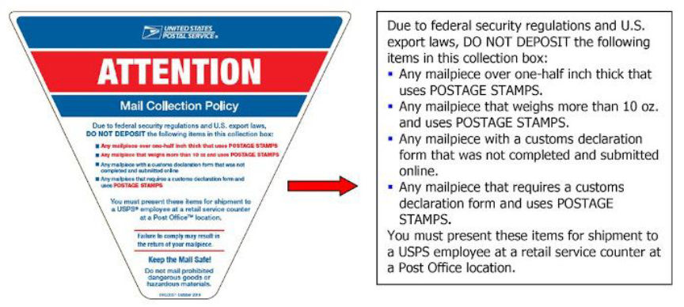
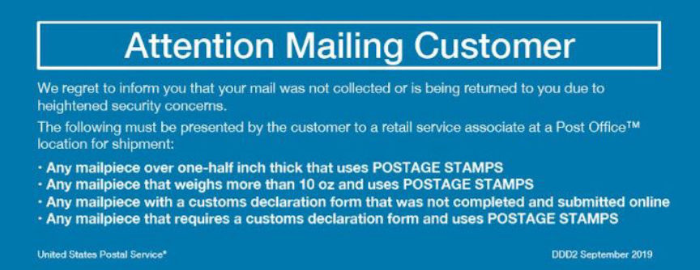
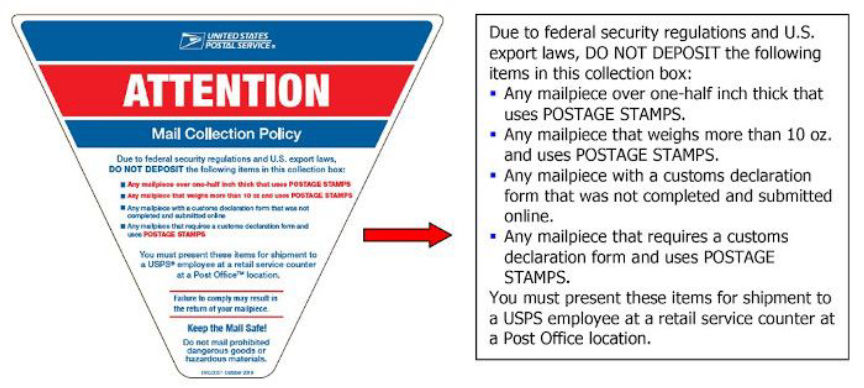

Some Darkweb Vendors Are Concerned About New USPS Rules
~2 min read | Published on 2019-09-28, tagged General-News using 337 words.
Darkweb vendors have issued warnings to other vendors and members of darkweb forums about upcoming changes to the United States Postal Service’s Aviation Mail Security initiative that prohibit certain packages from entering the mail steam through Blue Boxes and Post Office mail slots.
The Postal Service is modifying its Aviation Mail Security initiative to prohibit stamped mail pieces or stamped packages that are more than one-half inch thick or weigh more than 10 ounces from entering the mail stream through collection boxes, building mail chutes, and Post Office mail slots, according to the most recent Postal Bulletin.
Effective October 1, 2019, customers who need to mail stamped packages larger than one-half inch thick or heavier than 10 ounces will need to enter the Post Office and interact with an employee of the Postal Service at the retail counter.
Postal Service letter carriers will be required to more closely scan the mail collected from residences and collection boxes. Carriers have been instructed not to accept packages that fit the restricted criteria, even in face-to-face transactions. Carriers will instruct customers to take these items to the Post Office and conduct a transaction at the retail service counter. Items that cannot be returned immediately are to be isolated and returned to sender via surface transportation only. Mail that is returned to sender will have a Customer Return Label (DDD2) attached explaining the restrictions and reason for return. 
One vendor, in an email to darknetlive, wrote that the upcoming change will be “a major blow to the trade.” The vendor added that the new restrictions could “result in many people being investigated or worse.” Based on the emails this author has received and the scattered forum posts, it appears as if vendors are concerned that others are unaware of the changes.
The new triangular labels (pictured above) will be placed on more than 140,000 USPS collection boxes throughout the United States. Vendors and their shippers are not likely going to remain unaware for long.
The Postal Service is modifying its Aviation Mail Security initiative to prohibit stamped mail pieces or stamped packages that are more than one-half inch thick or weigh more than 10 ounces from entering the mail stream through collection boxes, building mail chutes, and Post Office mail slots, according to the most recent Postal Bulletin.
The New Warning Placed on More than 140,000 Collection Boxes
Effective October 1, 2019, customers who need to mail stamped packages larger than one-half inch thick or heavier than 10 ounces will need to enter the Post Office and interact with an employee of the Postal Service at the retail counter.
The New Customer Return Label Explaining Returned Packages
One vendor, in an email to darknetlive, wrote that the upcoming change will be “a major blow to the trade.” The vendor added that the new restrictions could “result in many people being investigated or worse.” Based on the emails this author has received and the scattered forum posts, it appears as if vendors are concerned that others are unaware of the changes.
The new triangular labels (pictured above) will be placed on more than 140,000 USPS collection boxes throughout the United States. Vendors and their shippers are not likely going to remain unaware for long.